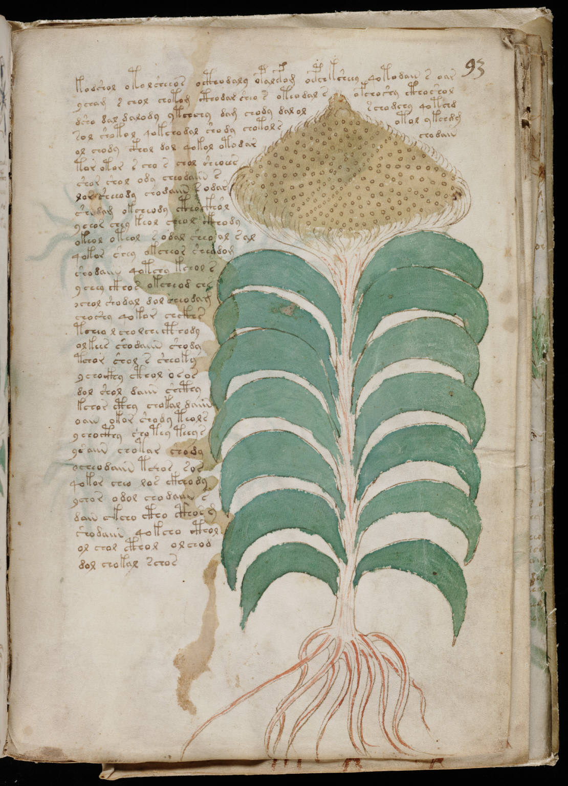

f93r
1kodshol otolsheeos octhodaly opalefom oepchksheey qotodain s oar2ycham s chol chotom cthodar sheo s oteodal sofchoshy cthoshol3dsho dal dalody ytchchy dam chody dal olschodchy qotchd4sol shotol qokchodal shody chotolsotol ykchdg5ol chody cfhol dol qokol otodarchodain6tor otor s cho s chol sheoees7shor shol ody cheodaiin s8lor sheeody chodaiin sodar9shodam okcheody ctho ckhol10ychor chey keol cheol ckhody11okeol oteol sodal sheo al sal12qokor shey okcheor sheedom13shodaiin qotchy kchol s14ychey ckhos okcheod chs15ochol shodal dol cheodam16choshy qokor chckhs17tcheo l cho lch cthody18olkees shodaiin shody19tchor shol s sheoky20ychockhy cthol osos21dol shol daiin shcthy22kchor cthy chokal daiin23oain okor shody teols24ychocthy chotey teeys25ysaiin chotar shody26ocheodaiin tchos sor27qokor cheo los ckheody28ychor odol cho daiin s29dain ckcho ctho cthosm30shodaiin qokcho cthol31ol chol cthol olchod32dol chokal schos
